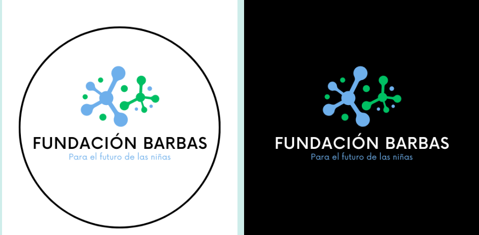

Mars 2023
Production d'un spot publicitaire
Réalisation d’un spot publicitaire promouvant les femmes dans le métier d’ingénieur pour un cours d’espagnol.
Objectif :
Dans le cadre d’un cours d’espagnol, le projet consiste à produire un spot publicitaire en groupe de 4. Le spot doit être intégralement en espagnol et promouvoir la place des femmes dans les métiers scientifiques. Nous avons choisi de suivre une jeune fille qui souhaite intégrer une école d’ingénieur mais son entourage l’en empêche. Elle finira par intégrer cette école où elle deviendra l’ambassadrice de la « Fundación Barbas » pour faire découvrir ce milieu à d’autres jeunes filles.
Réalisation :
Nous avons, dans un premier temps, écrit le script et détaillé chaque scène de la vidéo. J'ai ensuite réalisé deux logos pour l'associations fictive (disponibles ci-dessous). La prochaine étape a été de filmer les plans visibles dans le spot. Enfin, j'ai réalisé le montage de la vidéo sur Canva.
